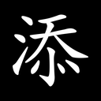
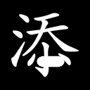
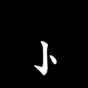
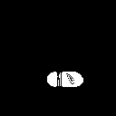
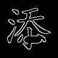

{kind=link}
s49341bbfbdec
先判断：明显结构异常 / 合法可接受 / 不确定或不可读。
判断后展开原字、完整笔画和 mask
来源字：添；间隙堵塞；原笔画序号（从 1 开始）：[8, 10]





{"added_stroke_count": 1.0, "attempts": 1.0, "blocked_length_96": 10.0, "blocked_length_fraction": 1.0, "bridge_centerline_length_96": 19.090699672698975, "bridge_thickness_96": 9.393799781799316, "changed_fraction": 0.19769673704414586, "gap_consumed_fraction": 1.0, "gate_end_x_96": 56.0, "gate_end_y_96": 65.0, "gate_start_x_96": 51.0, "gate_start_y_96": 65.0, "gate_width_96": 4.0, "glyph_scale": 96.0, "input_changed_fraction": 0.22527015793848712, "input_changed_pixels": 271.0, "input_edge_changed_pixels": 128.0, "input_foreground_changed_pixels": 198.0, "local_stroke_width": 6.262533187866211, "local_stroke_width_96": 4.696899890899658, "new_core_pixels_96": 156.0, "new_solid_area_96": 57.0, "new_solid_fraction": 0.04738154613466334, "new_solid_length_96": 11.0, "new_solid_radius_96": 3.0, "original_gap_area_96": 46.0, "original_gap_length_96": 10.0, "passage_end_x_96": 54.0, "passage_end_y_96": 68.0, "passage_start_x_96": 52.0, "passage_start_y_96": 61.0, "roi_x0_96": 51.0, "roi_x1_96": 59.0, "roi_y0_96": 60.0, "roi_y1_96": 70.0}下载操作前后笔画层（NPZ）